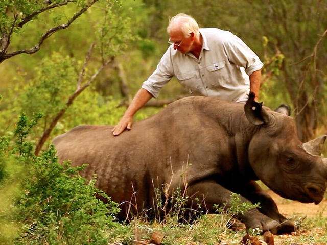
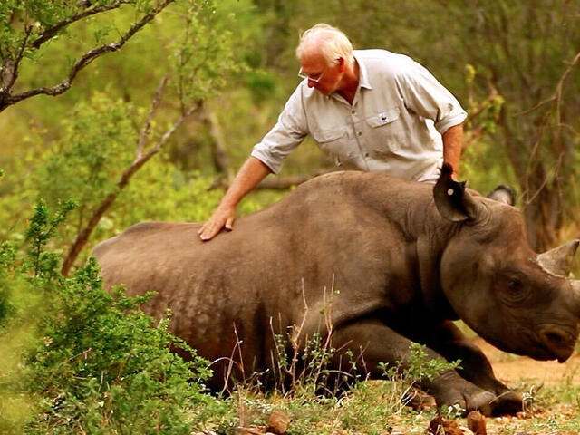

DEPARTMENT OF WILDLIFE CONSERVATION BATTARAMULLA
The Department of Wildlife Conservation Conserves the Biodiversity of Sri Lanka. Every individual species is provided legal protection through the Fauna and Flora Protection Ordinance No 2 of 1937.
Image from: Dept. Wildlife Conservation
Wildlife and Nature Protection Society (WNPS)
The history of wildlife protection in Sri Lanka is almost synonymous with that of the Wildlife and Nature Protection Society of Sri Lanka. At 128 years old, the WNPS is the third oldest Non-governmental Organization of its kind in the World and was responsible for the setting up of Wilpattu & Yala National Parks in Sri Lanka, and for the formation of the Department of Wildlife Conservation.
Image from: Wildlife Conservation Society
 
